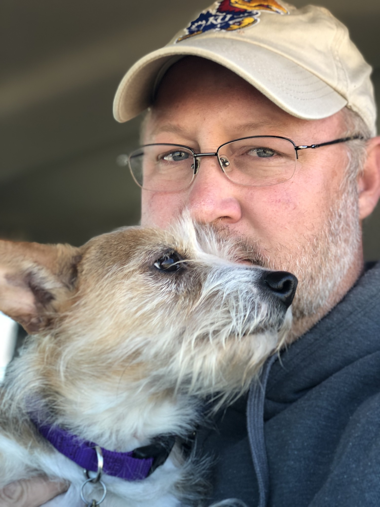

About the founder
Jon Peterson
Founder & Inventor, PQSensing · Architectural Engineer (Acoustics)
A multidisciplinary engineer who pairs two decades of drafting, documentation, and acoustics work with self-directed study in optics, interferometry, and DSP — and turns it into the disciplined, buildable validation roadmaps behind PQSensing's Advanced Supervisory Modules.

Hugoton, Kansas
Background
Engineering rigor from the bench, the blueprint, and the recording studio.
Jon is an architectural engineer with an acoustics emphasis and 20+ years of practical experience producing buildable drawings, construction documents, field measurements, models, and technical plans. That career — across architectural drafting, engineering support, and acoustical consulting — built a habit that now defines PQSensing: take an idea from theory to clear diagrams, defensible test plans, and reproducible analysis.
Today he leads PQSensing as founder, inventor, and independent technical developer, advancing Noise-Stationary Locking — the flagship of a family of Advanced Supervisory Modules that hold precision interferometric instruments at their best measurement operating point. He prepares the non-confidential concept diagrams, validation plans, and partner-facing materials, and frames the work around a lean, low-cost tabletop validation sprint.
His background in acoustics, signal flow, and DSP — sharpened over years of home-studio music production — maps naturally onto interferometric measurement, noise, and control, while his drafting discipline keeps the engineering organized, documented, and buildable.
EverSound Records
Jon also writes, produces, and releases music through EverSound Records, a home-studio label shaped by the same ear for signal flow, texture, timing, and detail that informs his acoustics and DSP work.
Experience
A through-line of measurement, documentation, and applied engineering.
Founder / Inventor — PQSensing
Develops the Noise-Stationary Locking control concept and the supervisory-module platform; produces concept diagrams, validation roadmaps, and partner-facing technical materials, integrating independent study in optics, photonics, interferometry, measurement noise, and DSP.
Non-confidential technical papers based on the PQSensing patent-application math and control architecture.
Contract Architectural Draftsman / CAD Technician — Media+Architecture
Self-employed drafting for regional architects, builders, and owners: floor plans, elevations, sections, details, schedules, field measurements, and as-builts on projects from roughly $50K to $5M, with AI-assisted workflows for productivity.
Selected redacted drawing excerpts are shown with titleblocks removed; project ownership and original files remain with Dan Fankhauser.
Acoustical Consulting — Engineering Dynamics International & Acoustical Design Group
Acoustical and theatre consulting: acoustical modeling, sound-system CAD drawings, AV equipment evaluation, technical documentation, and client coordination for performance-space and architectural-acoustics projects.
HABS Scholarship Team — University of Kansas
Documented the New York Life Insurance Building at 20 West Ninth Street in Kansas City for archival submission to the Library of Congress under the Historic American Buildings Survey; credited by LOC as Jon Peterson, delineator, with the measured-drawing set earning honorable mention for the Charles E. Peterson Prize. Jon took field measurements and produced measured pencil/construction drawings for the project, including work later traced in ink for the final HABS sheet set.
Education & recognition
Credentials.
B.S., Architectural Engineering
University of Kansas — Acoustics emphasis. EIT (Engineer in Training) certification.
Recognition
HABS / Recording & Representing Historic Structures scholarship (’98, ’99); honorable mention, Charles E. Peterson Prize; runner-up, ASA Student Design Competition.
Memberships
Member of Mensa; affiliations with the Acoustical Society of America (ASA) and ASHRAE.